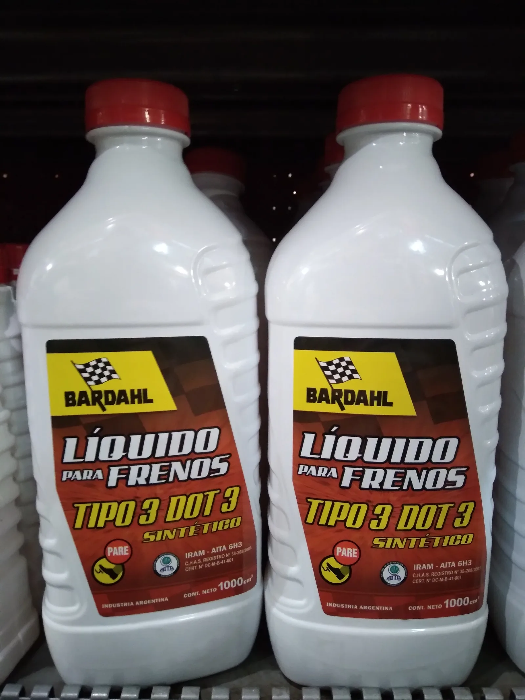

▲ 브레이크액 리저버 탱크. 잔량과 색상을 육안으로 확인할 수 있는 구조다 ⓒ Wikimedia Commons (CC BY 3.0)
엔진오일은 다들 신경 쓰지만, 브레이크액은 상대적으로 잊히는 소모품이다. 그런데 이 액체는 매년 조용히 성능이 떨어지고 있다. 원인은 습기다.
1. 왜 물을 빨아들이는가

▲ 브레이크 패드. 브레이크 시스템은 패드 못지않게 액체 상태도 중요하다 ⓒ CarPrism
브레이크액은 밀폐된 유압 라인 안에서 압력을 전달하는 매개체다. 그런데 DOT3·DOT4 등 일반적으로 쓰이는 브레이크액은 친수성(글리콜 에테르 계열) 성분으로 만들어져, 공기 중 수분을 서서히 흡수하는 특성이 있다. 완전히 밀폐된 시스템이라도 고무 호스나 씰을 통해 미세하게 수분이 침투하며, 그 양이 연간 2~3%에 달한다.
2. 수분이 쌓이면 생기는 일 — 베이퍼록
브레이크액에 수분이 섞이면 가장 먼저 나타나는 문제는 끓는점 저하다. 미국 연방자동차안전기준(FMVSS 116)에 따르면 DOT3의 건조 끓는점은 약 205℃, 수분이 3.7% 섞인 습식 끓는점은 약 140℃까지 떨어진다. DOT4는 이보다 여유가 있어 건조 시 약 230℃, 습식 시 약 155℃ 수준이다. 즉 새 브레이크액일 때와 수분을 흡수한 뒤의 끓는점 차이가 수십 도에 달한다는 뜻이다. 급제동이나 긴 내리막에서 브레이크 시스템 온도가 급격히 오르면, 수분이 섞인 브레이크액이 낮아진 끓는점 때문에 먼저 끓으면서 기포가 생긴다. 이 기포는 압축이 가능하기 때문에, 페달을 밟아도 압력이 제대로 전달되지 않는 베이퍼록 현상으로 이어진다. 브레이크가 물렁해지거나 아예 밀리는 느낌이 든다면 이 현상을 의심해야 한다.
3. DOT3 vs DOT4 — 뭐가 다른가

▲ 신품과 마모된 브레이크 패드 비교. 브레이크액도 패드처럼 상태 점검이 필요한 소모품이다 ⓒ CarPrism

▲ DOT3 규격 브레이크액 제품. 용기에 등급이 표기돼 있어 교체 시 등급을 반드시 확인해야 한다 ⓒ Wikimedia Commons (CC BY 4.0)
| 구분 | DOT3 | DOT4 |
|---|---|---|
| 수분 흡수 속도 | 더 빠름 | 더 느림 |
| 건조 끓는점 | 약 205℃ | 약 230℃ |
| 습식 끓는점(수분 3.7% 기준) | 약 140℃ | 약 155℃ |
| 권장 교체 주기 | 일반 주행 시 다소 여유 | 약 2년 |
DOT4는 DOT3보다 수분 흡수 속도가 느리지만, 화학적 조성 특성상 오히려 더 자주 교체해야 한다는 분석도 있다. 결국 어떤 등급을 쓰든 정기 교체가 핵심이라는 결론은 같다. 차량 제조사가 지정한 등급을 임의로 바꾸지 않는 것도 중요하다.
4. 언제, 어떻게 확인하나

▲ 브레이크 디스크 로터. 브레이크액의 압력이 최종적으로 전달되는 지점으로, 액체 상태가 나쁘면 이 부품의 제동력도 함께 떨어진다 ⓒ CarPrism

▲ 브레이크 패드 마모 점검. 브레이크액도 이런 정기 점검 항목에 함께 포함시켜야 한다 ⓒ CarPrism
브레이크액은 리저버 탱크의 잔량과 색상으로 1차 점검이 가능하다. 새 브레이크액은 투명하거나 옅은 노란색이지만, 오래되면 갈색으로 탁해진다. 색이 짙어졌다면 수분·불순물이 섞였다는 신호다. 다만 색상만으로 정확한 수분 함량을 알기는 어려우므로, 정비소에서 수분 함량 테스터로 측정받는 것이 가장 정확하다. 통상 4~5만km 주행 시점이나 2년 주기 중 먼저 도래하는 시점에 점검받는 것이 안전하다.
5. 정리
체크포인트
- 브레이크액은 매년 2~3%씩 수분을 흡수하는 소모품이다.
- 수분이 쌓이면 끓는점이 낮아져 베이퍼록 위험이 커진다.
- DOT4 기준 약 2년, 혹은 4~5만km마다 점검·교체를 권장한다.
- 차량 제조사가 지정한 등급을 임의로 바꾸지 않는 것도 중요하다.